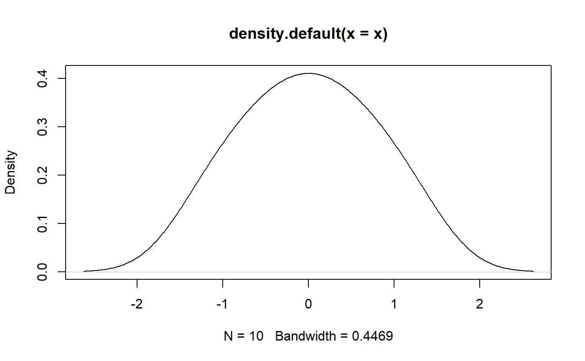

Generate a sample of size n with a near-perfect distribution.
distribution(type = "normal", ...) distribution_normal(n, mean = 0, sd = 1, random = FALSE, ...) distribution_cauchy(n, location = 0, scale = 1, random = FALSE, ...) distribution_poisson(n, lambda = 1, random = FALSE, ...) distribution_student(n, df, ncp, random = FALSE, ...) distribution_chisquared(n, df, ncp = 0, random = FALSE, ...) distribution_uniform(n, min = 0, max = 1, random = FALSE, ...) distribution_beta(n, shape1, shape2, ncp = 0, random = FALSE, ...) rnorm_perfect(n, mean = 0, sd = 1)
| type | Can be |
|---|---|
| ... | Arguments passed to or from other methods. |
| n | number of observations. If |
| mean | vector of means. |
| sd | vector of standard deviations. |
| random | Generate near-perfect or random (simple wrappers for the base R |
| location | location and scale parameters. |
| scale | location and scale parameters. |
| lambda | vector of (non-negative) means. |
| df | degrees of freedom (\(> 0\), maybe non-integer). |
| ncp | non-centrality parameter \(\delta\);
currently except for |
| min | lower and upper limits of the distribution. Must be finite. |
| max | lower and upper limits of the distribution. Must be finite. |
| shape1 | non-negative parameters of the Beta distribution. |
| shape2 | non-negative parameters of the Beta distribution. |
